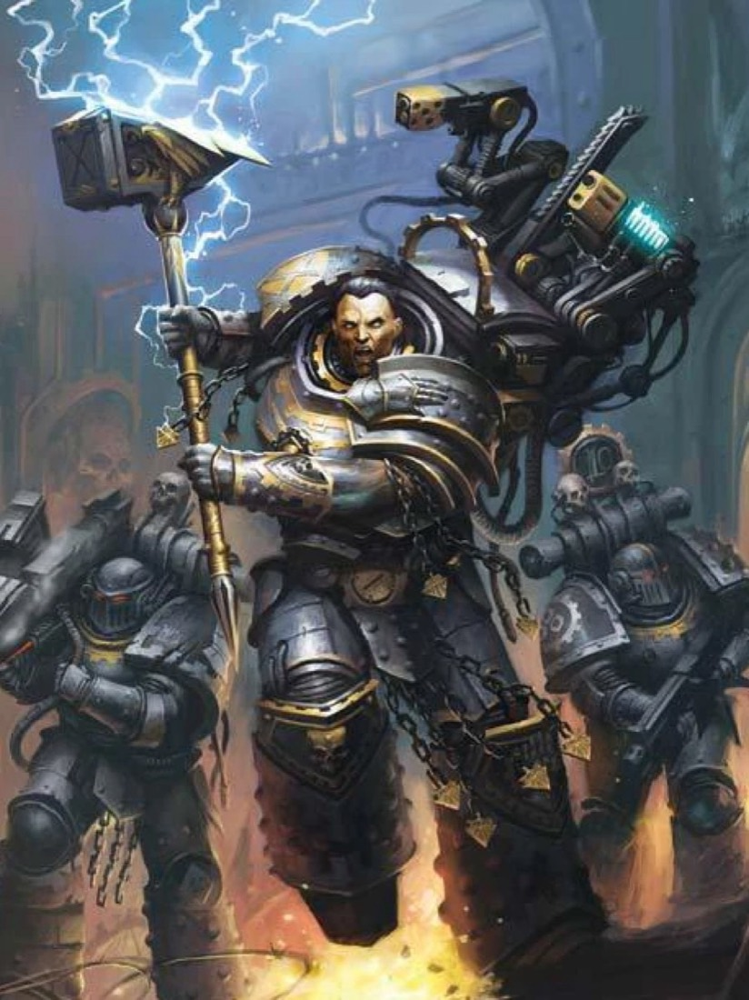

Ferrus Manus
| Ferrus Manus | |
|---|---|
| Primarch of the X Legion | |
 The Gorgon at the head of his Morlock bodyguard, from a votive plate of the Iron Hands Artwork © Games Workshop | |
| Primarch of the Iron Hands | |
| Tenure | 824.M30 – 006.M31 (slain) |
| Also known as | The Gorgon; the Iron Hand (Ferrus Manus in High Gothic) |
| Allegiance | Emperor of Mankind (Loyalist) |
| Legion | |
| Homeworld | Medusa, Segmentum Obscurus |
| Created | Beneath the Himalazian mountains, Terra, c. 792.M30 |
| Discovered | 824.M30, on Medusa, among the first of the primarchs to be found |
| Died | 006.M31, on Isstvan V, slain by Fulgrim |
| Relatives |
|
| Wargear | Medusan Carapace; Forgebreaker; Fireblade (reforged); silver necrodermis gauntlets |
| Known for | Mastery of the forge; the Iron Hands; death at the Drop Site Massacre |
Ferrus Manus, called the Gorgon, was the Primarch of the X Legion of the Space Marine Legions, the Iron Hands. A warlord of the volcanic world of Medusa, he was among the first of the Emperor's sons to be found in the Great Crusade. He was a smith and engineer of the first rank, whose designs for armour and arms were adopted across the Legions, and he was a warrior of great strength, with forearms and hands covered to the elbow in a living metal taken from a monster he had slain.[1]
His closest friend among his brothers was Fulgrim, with whom he exchanged weapons forged under the Urals. When the Horus Heresy began, Fulgrim, already corrupted, tried to win him over and failed. Ferrus Manus was struck down and left alive, and then led the Iron Hands as senior primarch of the first wave at the landing on Isstvan V. He was killed there in the Drop Site Massacre, decapitated by the brother he had once called his equal.[2]
His death left the Iron Hands without a father and without a way to mourn him. The Legion took his rejection of weakness as an ideal and turned it into a creed, which its Chapters still follow. Imperial scholars of the Inquisition also record a daemon, the Sapphire King, said to have been born in the moment of his death.[1][3]
Early life
[edit]Medusa
[edit]The gestation capsule of the infant primarch came down on Medusa, a cold, geologically unstable feral world near the Eye of Terror, striking Karaashi, the highest mountain on the planet, known as the Ice Pinnacle. The impact shattered the peak and shook the whole world. The Medusans later said that many of their mountains simply shook themselves to pieces.[1]
Years later a fully grown man walked out of the uninhabited northern ranges. The nomad clans of Medusa, who lived on a hard world of black ice and fire, named him Ferrus Manus, "Iron Hand". Medusan legend, which is the only source for these years, describes him wandering the polar wastes, casting down storm giants, and killing the dead machines of the ice-buried ancient works. The most famous of the stories tells of the silver wyrm Asirnoth, a deathless thing that Imperial savants believe to have been a machine of the Necrons. He lured it into a flow of molten rock to destroy it. Its quicksilver skin, the necrodermis, fused to his hands and forearms in its death throes, and it has covered them since.[1]
When he came down from the north to bring the clans under his rule he was already regarded as a god. He did not ask the Medusans to worship him. He asked for obedience, and he broke those who withheld it. Nor did he try to end the wars of the clans. He traded with the Iron Fathers, the half-priest, half-smith keepers of the clans' technical lore, and gave them his own knowledge in exchange for their secrets. Under his teaching the clans forged better weapons and machines. He led the best of the warriors into the ice to open sealed vaults and recover metal and machines left from older wars, and they fought degenerate mutants and half-living cyborgs in the dark.[1]
The Emperor
[edit]By the time the Emperor came to Medusa in 824.M30, Ferrus Manus was warlord, demigod and sage to its people, and Imperial records say he was waiting. He had more than half guessed the purpose of his making. His passage from planetary ruler to commander of the Crusade was swift. He studied under the Emperor, learned in the forges of Mars, and in time took command of the X Legion and rebuilt it from its roots.[1]
He renamed it the Iron Hands. He took the Legion apart, and reassembled it with the care of a craftsman rebuilding a chronometer. He took Medusa as its home and joined the Terran Legionaries to the Medusan clans by force: the old Terran chapters were replaced by clans, and the Space Marines displaced the traditional rulers in the only way the Medusans understood. The Iron Hands became the new masters of Medusa, and the people of the clans lived and died so that their sons might be found worthy to be Aspirants. On worlds the Legion conquered, he exacted a tithe of strong boys, chosen by Mechanicus priests and sent to Medusa to live or die on its trials.[1]
Great Crusade
[edit]The Gorgon and the Phoenix
[edit]
The bond between Ferrus Manus and Fulgrim was among the best known of the Crusade. They met on Terra, in the great forge beneath Mount Narodnya in the Urals, where Ferrus Manus was working with the forge-masters who had served the Terrawatt Clan in the Unification Wars. Fulgrim arrived with his Phoenix Guard. Neither had met the other, and both felt the kinship of two beings made in the same craft. According to the account Ferrus Manus later gave his Legionaries, Fulgrim said that he had come to forge the most perfect weapon ever made. Ferrus laughed, and told him that such pale hands could never match his own living metal. Fulgrim took up the challenge.[1]

The two worked for three months without rest, trading insults and hammer blows. Ferrus Manus forged a golden-bladed sword, Fireblade, that burned always with the heat of the forge. Fulgrim made a great hammer, Forgebreaker, that could level a mountain with one blow. They exchanged weapons, and each carried the other's work into the Great Crusade. The friendship that followed was intense, and the Iron Hands and the Emperor's Children fought side by side often.[1]
Campaigns
[edit]The Iron Hands were a Legion of machine-like discipline, among the best at the grinding war of fortified positions. Ferrus Manus never ceased to improve the arms and armour he made, and tested prototypes against his own strength. Several of them, among them the earliest Cataphractii pattern of Terminator armour, were adopted by the other Legions. Medusa's clans also supplied the Legion with Terminator-armoured veterans, the Morlocks, who formed the primarch's bodyguard.[1]
In the later years of the Crusade the Iron Hands met a nomadic fleet-borne civilisation of humans and xenos called the Diasporex. The Legion offered the human portion the chance to leave their alien allies and join the Imperium. They refused, and the Iron Hands tried to destroy them. The Diasporex, skilled in the void, evaded battle and damaged the strike cruiser Ferrum. The Emperor's Children of the 28th Expedition were called to reinforce, and the combined fleets forced a battle by striking the hidden solar collectors on which the Diasporex depended for fuel. During the battle Fulgrim's gunship, the Firebird, was badly damaged, and Ferrus Manus took his flagship, the battle barge Fist of Iron, to his brother's aid.[1]
Ferrus Manus brought to the Crusade a hard morality. He despised weakness and held the Legion to a standard it sometimes could not meet. By his presence in battle he drove his Legionaries to feats of endurance. He also kept private doubts. A set of writings attributed to him, the Neimerel Scrolls, records his belief that the silver on his arms was a dependency. He wrote that his Legion's warriors replaced their shield hands with metal in his honour and that they must be taught to doubt the strength of the flesh no longer. He resolved that when the Crusade was done he would strip the silver from his own hands and lead the Legion back toward the mysteries of the body. He did not live to do so.[4]
Horus Heresy
[edit]The Anvilarium
[edit]While Horus began his rebellion at Isstvan III, Ferrus Manus and the Iron Hands' 52nd Expeditionary Fleet were retaking the world of Callinedes IV from the Orks. Fulgrim, who had been sent to join the Warmaster, delayed the greater part of his Legion and travelled to meet Ferrus aboard the Fist of Iron, believing that his friend could be persuaded.[2]
The meeting took place in the primarch's private sanctum, the Anvilarium. Ferrus Manus was horrified that his brothers could turn on their father. The conference became a fight. He tried to destroy Fulgrim's sword Fireblade, which he had made, with his silver hands, and the blast knocked him unconscious. Fulgrim, urged on by the daemon now sitting in his soul, was unable to kill him. He took Forgebreaker, the weapon that he had once made for Ferrus Manus, as a keepsake, and left Fireblade behind. When he left the sanctum, his Phoenix Guard cut down the Morlock Terminators with power halberds and nearly killed the Legion's First Captain, Gabriel Santor. Fulgrim fled in the Firebird while the warships of the Emperor's Children fired on the Iron Hands' fleet and crippled it.[2]
Isstvan V
[edit]Ferrus Manus, overcome with rage, welcomed the orders that came from the Emperor through Rogal Dorn. The Iron Hands, Raven Guard and Salamanders were to land on Isstvan V and crush Horus and his lieutenants, with a second wave of the Night Lords, Iron Warriors, Alpha Legion and a contingent of Word Bearers following behind. Ferrus Manus, as the senior primarch of the first wave, led it. The Salamanders took the left flank, the Raven Guard the right, and the Iron Hands, with ten companies of Morlock Terminators, drove at the centre.[2]
The first wave landed in 006.M31, secured the drop site in the Urgall Depression and broke the Traitor line. Ferrus Manus, seeing the Traitors retreating, ignored the counsel of Vulkan and Corvus Corax and led his veterans after them, seeking Fulgrim. When the second wave arrived at the drop site, it opened fire on the exhausted loyalists. The Traitor line turned about. The Iron Hands' veteran companies were attacked by World Eaters, Sons of Horus and Death Guard, and fought on until they were overwhelmed.[2][5]
Death
[edit]Fulgrim stood before him. Ferrus Manus told him that he had gone mad, because the Warmaster had been beaten and four Legions were coming to finish him. Fulgrim, laughing, pointed to the second wave and showed him the trap. The two primarchs fought. Ferrus Manus, with the reforged Fireblade, and Fulgrim, with Forgebreaker, met in a flare of energy. Each wounded the other badly. Ferrus Manus staggered to his feet and raised his sword at Fulgrim's neck. Fulgrim, drawing the possessed blade he had taken from the temple of the Laer, blocked the stroke, and the strength of the Warp flowed into him. The silver sword drove into Ferrus's breastplate and the Iron Hand fell to his knees, and Fireblade slipped from his grasp.[2]
The accounts say that Fulgrim hesitated, seeing what he had become, and that the Chaos in the sword overcame him. He took off his brother's head with a single stroke. His hammer, Forgebreaker, was afterwards given by Horus to Perturabo, as a token of the Iron Warriors' alliance with the Warmaster.[2][6]
Aftermath and legacy
[edit]The Iron Hands lost the bulk of their Legion on Isstvan V. A band of survivors, the remnant of the Legion's veterans and serfs together with a few Salamanders and a single Raven Guard, escaped the system in the strike cruiser Sisypheum, and pursued the Traitors in the Eye of Terror. After the war, Guilliman's Codex Astartes divided the Legion, and the Iron Hands as a Chapter and their successors, among them Clan Raukaan, remain.[5]
The Iron Hands came out of the Heresy with an intensified belief in the superiority of the machine to the flesh, the opposite of what Ferrus Manus wrote in the Neimerel Scrolls. Their Chapters replace limbs and organs with augmetics, honour the Medusan clans, and rule themselves through an Iron Council of the Iron Fathers. Mechanicus scholars note that the Chapter's ancestral weakness has been that its warriors treat feeling as a defect to be cut out, and that they have thereby lost the means to recognise their own despair.[1]
The Inquisition's records also describe the Sapphire King, a daemon of the Warp said to have been created in the instant that Ferrus Manus was beheaded, from the primarch's pride, anger and shame. It fed on the repressed emotions of his Legion and, according to the Ordo Malleus, has worked against the Chapter ever since, offering damnation disguised as strength. Its influence is said to have shaped the long dispute known as the Kristosian Conclave.[3]
Character and abilities
[edit]Ferrus Manus was one of the strongest of the primarchs, and an artificer of the first rank. He worked in metal as other men breathe, and he was never satisfied with the result. He despised weakness in himself, in his sons and in the world he found, and the Iron Hands inherited this. Imperial scholars describe him as taciturn about his youth, honest, direct, quick to rage, and capable of unforced warmth with the few he trusted. His loyalty to the Emperor was without condition, and it was this which led him to pursue Fulgrim across Isstvan V against the advice of the others.[1]
The silver on his hands was both his greatest weapon and his private fear. He could strike through armour and shatter weapons forged by lesser hands, but he knew that the reliance he had on it was a flaw, and he resolved to cure it.[4]
Wargear
[edit]His armour, the Medusan Carapace, was made by his own hand and carried servo-mechanisms, power systems and many experimental devices. The Carapace is the type from which the Cataphractii pattern of Terminator armour was later developed. His principal weapon was the great hammer Forgebreaker, made for him by Fulgrim. His sword, Fireblade, was made by him for Fulgrim, and he reforged it after Fulgrim had left it in the Anvilarium. His arms and hands were sheathed in the silver necrodermis of Asirnoth.[1][2]
Timeline
[edit]| Date | Event |
|---|---|
| c. 792.M30 | The infant primarch is lost from the gene-vaults of Terra in the scattering of the primarchs and falls on Medusa, shattering the peak of Karaashi. |
| 824.M30 | The Emperor comes to Medusa. Ferrus Manus takes command of the X Legion and renames it the Iron Hands. |
| c. 831.M30[a] | Forges the sword Fireblade beneath Mount Narodnya with Fulgrim, who makes the hammer Forgebreaker. |
| 000.M31 | Present at the Triumph of Ullanor, where Horus is named Warmaster. |
| c. 001.M31 | The Iron Hands' 52nd Expeditionary Fleet destroys the Diasporex. |
| c. 004.M31 | Writes the Neimerel Scrolls, recording his private doubts about the weakness of the flesh. |
| 005.M31 | While Horus opens the rebellion at Isstvan III, the Iron Hands retake Callinedes IV. Fulgrim fails to turn him in the Anvilarium. |
| 006.M31 | Leads the first wave at the Drop Site Massacre on Isstvan V and is beheaded by Fulgrim. |
| 006.M31 | The survivors escape in the Sisypheum and fight on as part of the Shattered Legions. |
| c. 021.M31 | The Iron Hands are divided into Chapters in the Second Founding under the Codex Astartes. |
See also
[edit]Notes
[edit]- ^ Date estimated from the sequence of events.
References
[edit]- ^ a b c d e f g h i j k l m n Wraight, Chris. Wrath of Iron (novel). Black Library. Dembski-Bowden, Aaron. The First Heretic (novel). Black Library.
- ^ a b c d e f g h McNeill, Graham. Fulgrim (novel). Black Library. Mitchell, Sandy. Innocence Proves Nothing (novel). Black Library.
- ^ a b Green, Jonathan. Iron Hands (novel). Black Library. McNeill, Graham. Mechanicum (novel). Black Library.
- ^ a b McNeill, Graham. Angel Extermiantus (novel). Black Library. Hoare, Andy. Rogue Star (novel). Black Library.
- ^ a b Mitchell, Sandy. Scourge the Heretic (novel). Black Library. Hoare, Andy. Star of Damocles (novel). Black Library.
- ^ French, John. Mortis (novel). Black Library, Limited Edition Artwork. Clan Raukaan - A Codex: Space Marines Supplement (Digital Edition) (6th Edition). Games Workshop.